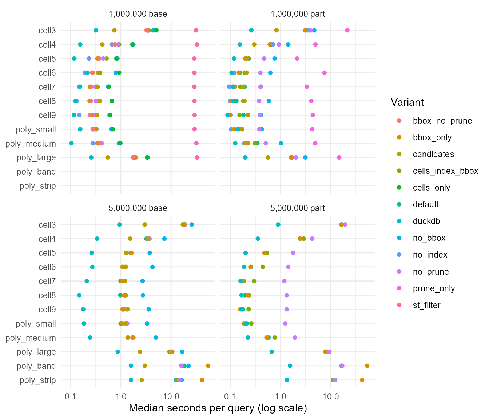

Benchmark: which steps of the spatial filter pay off
Source:vignettes/articles/benchmark-spatial.Rmd
benchmark-spatial.RmdThis article reads stored results; it does not run the benchmark. The
script is bench/spatial.R; its code is shown below as it
was run.
Question
A spatial read (store_read(intersects = ),
store_intersects()) runs five steps (see “Reading” in the
package’s design): it finds the covering H3 cells of the query, prunes
files by their box and cell range (file pruning), pushes a test on the
stored cell h3 into the scan (cell filter), adds the rows
of the index table for rows that cross cell edges (index table), pushes
a test on the stored bbox struct into the scan (bbox
pushdown), and tests the candidate rows exactly with
sf::st_intersects() (exact test). Which of these steps pay
off, at which h3_res, row-group size and sort order? And
how does the result compare with the bbox struct alone, with DuckDB
spatial on the same files, and with reading everything and filtering
with sf::st_filter()?
Setup
env <- timed[1, grep("^env_", names(timed))]
knitr::kable(data.frame(
item = sub("^env_", "", names(env)),
value = vapply(env, function(v) as.character(v[[1]]), character(1)),
row.names = NULL
))| item | value |
|---|---|
| date | 2026-11-21 01:20:02 |
| commit | f00effc |
| r_version | 4.6.2 |
| os | Windows 10 x64 |
| cpu | Intel64 Family 6 Model 142 Stepping 12, GenuineIntel |
| cores | 8 |
| ram_gb | 31.8 |
| storage | ssd |
| packages | {“rcs”:“0.0.0.9000”,“arrow”:“26.0.1”,“sf”:“1.1.3”,“h3o”:“0.3.0”,“h3jsr”:“1.3.1”,“terra”:“1.9.50”,“duckdb”:“2.0.0”,“bit64”:“4.8.6”} |
rcs_sim_polygons() of 1,000,000 and 5,000,000 rows
(polygons in a box of 6 by 3 degrees, 10% built to cross resolution-5
cell edges, a few large ones), written in these layouts into a local
store on SSD (write_s without the serialization check):
shown <- layouts[c("rows", "layout", "partition", "h3_res", "rows_per_group", "sort", "write_s", "files", "row_groups", "data_bytes", "index_rows", "index_bytes")]
shown$data_mb <- round(shown$data_bytes / 1e6, 1)
shown$index_mb <- round(shown$index_bytes / 1e6, 1)
shown$data_bytes <- shown$index_bytes <- NULL
shown$write_s <- round(shown$write_s)
knitr::kable(shown[order(shown$rows, shown$layout), ], row.names = FALSE, format.args = list(big.mark = ","))| rows | layout | partition | h3_res | rows_per_group | sort | write_s | files | row_groups | index_rows | data_mb | index_mb |
|---|---|---|---|---|---|---|---|---|---|---|---|
| 1e+06 | base | FALSE | 5 | 5e+04 | h3 | 75 | 1 | 20 | 427,904 | 99.4 | 4.8 |
| 1e+06 | fine | FALSE | 5 | 5e+04 | fine | 91 | 1 | 20 | 427,904 | 99.4 | 4.9 |
| 1e+06 | part | TRUE | 5 | 5e+04 | h3 | 72 | 28 | 38 | 427,904 | 99.6 | 4.8 |
| 1e+06 | res4 | FALSE | 4 | 5e+04 | h3 | 40 | 1 | 20 | 93,536 | 99.5 | 1.1 |
| 1e+06 | res6 | FALSE | 6 | 5e+04 | h3 | 101 | 1 | 20 | 649,529 | 99.4 | 7.7 |
| 1e+06 | rg1e5 | FALSE | 5 | 1e+05 | h3 | 75 | 1 | 10 | 427,904 | 99.7 | 4.8 |
| 1e+06 | rg2e4 | FALSE | 5 | 2e+04 | h3 | 76 | 1 | 50 | 427,904 | 99.6 | 4.8 |
| 5e+06 | base | FALSE | 5 | 5e+04 | h3 | 383 | 1 | 100 | 2,136,389 | 495.3 | 24.3 |
| 5e+06 | part | TRUE | 5 | 5e+04 | h3 | 388 | 28 | 118 | 2,136,389 | 495.5 | 24.3 |
partition = TRUE is partition = "h3" (the
package picks the parent resolution). sort = "fine" orders
the rows inside each h3 cell by the cell of their box
centre at h3_res + 3 instead of the written order; it is
done in the benchmark by wrapping the internal
geo_encode(), the package has no such option.
Queries: five instances of each of H3 cells of resolutions 3 to 9
(from random points in the box) and irregular polygons of three sizes
(radius about 0.01, 0.1 and 0.5 degrees, about 1, 11 and 55 km). At 5e6
rows two more polygon types were added after the results at 1e6 rows:
diagonal strips 2 degrees long and 0.01 degrees wide
(poly_strip) or 0.2 degrees wide (poly_band),
whose box is 100 and about 7 times larger than the shape. The same
queries are used for every layout of a size.
Variants, each a query run through the package’s internal steps with
one or more steps left out. default is
store_read(intersects = ) itself. It changed during this
benchmark: before, it ran every step for every query
(cells_index_bbox; the rows measured then are shown under
that name); since, it runs the box test alone (bbox_only)
unless the area of the query’s box is more than 4 times the area of the
query or the query has no box (across the antimeridian or around a
pole), and then every step.
| Variant | File pruning | Cell filter | Index table | Bbox pushdown | Exact test | Complete |
|---|---|---|---|---|---|---|
default |
by box (and cells) | when it pays | when it pays | yes | yes | yes |
cells_index_bbox |
yes | yes | yes | yes | yes | yes |
no_bbox |
yes | yes | yes | no | yes | yes |
no_prune |
no | yes | yes | yes | yes | yes |
no_index |
yes | yes | no | yes | yes | no |
candidates |
yes | yes | yes | yes | no | superset |
bbox_only |
by box | no | no | yes | yes | yes |
bbox_no_prune |
no | no | no | yes | yes | yes |
cells_only |
no | yes | yes | no | yes | yes |
prune_only (partitioned) |
by box | no | no | no | yes | yes |
Comparisons: bbox_only is the bbox struct alone;
duckdb runs DuckDB 2.0 with the spatial
extension on the same files (read_parquet() over the file
list, the box test on bbox fields, which DuckDB pushes into
the scan, and ST_Intersects()), returning the rows with WKB
geometry but not as sf; read_all +
st_filter is store_read() of everything
followed by sf::st_filter() on the query shape. Every query
type is timed with bench_run(): five repetitions, one query
instance per repetition (the first instance runs twice), median
reported; local reads are warm (file cache), GCS reads cold (new
connection and new cloud clients before every query). Counters (files,
row groups whose statistics overlap the filter, candidate rows) are
taken for every combination of file pruning and row filter, without the
exact test, and every candidate set is compared with the exact
answer.
root <- normalizePath(Sys.getenv("RCS_BENCH_ROOT", "."), winslash = "/")
devtools::load_all(root, quiet = TRUE)
source(file.path(root, "bench", "harness.R"))
results_dir <- Sys.getenv("RCS_BENCH_RESULTS", file.path(root, "bench", "results"))
rlang::check_installed(c("h3o", "bench", "duckdb", "DBI"))
n <- as.numeric(Sys.getenv("RCS_BENCH_SIZES", "1e6"))
gcs_root <- Sys.getenv("RCS_TEST_GCS", "")
work <- file.path(tempdir(), "rcs-bench-spatial")
unlink(work, recursive = TRUE)
dir.create(work, recursive = TRUE)
options(rcs.quiet = TRUE, rcs.workers = 1)
sf::sf_use_s2(TRUE)
dataset <- "shapes/polygons"
instances <- 5L
env <- bench_env(storage = "ssd")
env$commit <- tryCatch(
system2("git", c("-C", root, "rev-parse", "--short", "HEAD"), stdout = TRUE),
error = function(e) NA_character_
)
# `sort = "fine"`: inside each `h3` cell, rows are ordered by the cell of
# their box centre at `h3_res + 3` (see `fine_sort()`).
layouts <- tibble::tribble(
~layout, ~partition, ~h3_res, ~rows_per_group, ~sort,
"base", FALSE, 5L, 50000L, "h3",
"part", TRUE, 5L, 50000L, "h3",
"res4", FALSE, 4L, 50000L, "h3",
"res4_part", TRUE, 4L, 50000L, "h3",
"res6", FALSE, 6L, 50000L, "h3",
"res6_part", TRUE, 6L, 50000L, "h3",
"rg2e4", FALSE, 5L, 20000L, "h3",
"rg1e5", FALSE, 5L, 100000L, "h3",
"fine", FALSE, 5L, 50000L, "fine"
)
# res4_part and res6_part are not run by default: the partition resolution
# is the finest at or below `h3_res` with at most `max_files` files, the
# same for `h3_res` 4, 5 and 6 on these data, so the files are those of
# `part`
default_layouts <- if (n <= 1e6) c("base", "part", "res4", "res6", "rg2e4", "rg1e5", "fine") else c("base", "part")
chosen <- strsplit(Sys.getenv("RCS_BENCH_LAYOUTS", paste(default_layouts, collapse = ";")), ";")[[1]]
on_gcs <- strsplit(Sys.getenv("RCS_BENCH_GCS", ""), ";")[[1]]
if (length(on_gcs) > 0 && !nzchar(gcs_root)) {
cli::cli_abort("Set {.envvar RCS_TEST_GCS} to time layouts on GCS.")
}
# Written order with a finer cell inside `h3`: wraps `geo_encode()` for the
# duration of one write. The rows are put in the order (h3, cell of the box
# centre at h3_res + 3, previous order); `.rcs_id` is given again in that
# order and the index rows follow their rows. The finer cell is only a sort
# key; nothing about it is stored.
fine_sort <- function(encoded, h3_res) {
data <- encoded$data
box <- data$bbox
cx <- (box$xmin + box$xmax) / 2
cy <- (box$ymin + box$ymax) / 2
fine <- rep(bit64::NA_integer64_, nrow(data))
ok <- !is.na(cx)
if (any(ok)) {
points <- sf::st_as_sfc(wk::xy(cx[ok], cy[ok], crs = 4326))
fine[ok] <- h3_as_int64(h3o::h3_from_points(points, min(15L, h3_res + 3L)))
}
order <- vctrs::vec_order(
data.frame(h3 = as.character(data$h3), fine = as.character(fine), row = seq_len(nrow(data))),
na_value = "largest"
)
# the cells of one resolution have the same number of digits, so their
# decimal strings sort like the integers
first <- min(data$.rcs_id)
old_ids <- data$.rcs_id[order]
data <- data[order, , drop = FALSE]
data$.rcs_id <- first + bit64::as.integer64(seq_len(nrow(data)) - 1L)
if (!is.null(encoded$index) && nrow(encoded$index) > 0) {
index <- encoded$index
index$.rcs_id <- data$.rcs_id[match(as.character(index$.rcs_id), as.character(old_ids))]
index <- index[order(as.character(index$h3), as.numeric(index$.rcs_id)), , drop = FALSE]
encoded$index <- index
}
encoded$data <- data
encoded
}
with_fine_sort <- function(code) {
ns <- asNamespace("rcs")
original <- get("geo_encode", envir = ns)
wrapped <- function(x, h3_res = 5L, ...) fine_sort(original(x, h3_res = h3_res, ...), h3_res)
unlockBinding("geo_encode", ns)
assign("geo_encode", wrapped, envir = ns)
on.exit({
assign("geo_encode", original, envir = ns)
lockBinding("geo_encode", ns)
})
force(code)
}
# Five instances of each query type, the same for every layout of a size.
# Cells are given as hex strings; polygons are irregular 16-gons around a
# random centre, radius about 0.01, 0.1 or 0.5 degrees.
make_queries <- function(seed = 7) {
withr::with_seed(seed, {
out <- list()
for (res in 3:9) {
x <- stats::runif(instances, -29.9, -24.1)
y <- stats::runif(instances, 6.1, 8.9)
cells <- h3o::h3_from_points(sf::st_as_sfc(wk::xy(x, y, crs = 4326)), res)
out[[paste0("cell", res)]] <- as.list(as.character(cells))
}
for (size in c(small = 0.01, medium = 0.1, large = 0.5)) {
shapes <- lapply(seq_len(instances), function(i) {
cx <- stats::runif(1, -29.4, -24.6)
cy <- stats::runif(1, 6.6, 8.4)
a <- sort(stats::runif(16, 0, 2 * pi))
r <- size * stats::runif(16, 0.6, 1)
xy <- cbind(cx + r * cos(a), cy + r * sin(a))
sf::st_sfc(sf::st_polygon(list(rbind(xy, xy[1, ]))), crs = 4326)
})
out[[paste0("poly_", names(which(c(small = 0.01, medium = 0.1, large = 0.5) == size)))]] <- shapes
}
# diagonal strips 2 degrees long, 0.01 (strip) or 0.2 (band) degrees
# wide, whose box is much larger than the shape; added after the first
# runs at 1e6 rows
strip <- function(half_width) {
lapply(seq_len(instances), function(i) {
cx <- stats::runif(1, -28, -26)
cy <- stats::runif(1, 7, 8)
a <- stats::runif(1, pi / 8, 3 * pi / 8)
along <- c(cos(a), sin(a))
across <- c(-sin(a), cos(a))
w <- half_width * across
corners <- rbind(c(cx, cy) - along - w, c(cx, cy) + along - w, c(cx, cy) + along + w, c(cx, cy) - along + w)
sf::st_sfc(sf::st_polygon(list(rbind(corners, corners[1, ]))), crs = 4326)
})
}
if (strips) {
out$poly_strip <- strip(0.005)
out$poly_band <- strip(0.1)
}
out
})
}
strips <- n > 1e6 || nzchar(Sys.getenv("RCS_BENCH_STRIPS"))
queries <- make_queries()
query_types <- names(queries)
# The query shapes as the package tests them (cell polygons; polygons as
# given), in EPSG:4326, for the comparisons.
query_shape <- function(y) geo_covering(y, 5L, sf::st_crs(4326)$wkt)$shape
shapes <- lapply(queries, lapply, query_shape)
# The steps of the spatial filter, each switched on or off. `prune`: drop
# files by their box (and, with cells, their h3 range); `cells`: the cell
# test on `h3`; `index`: add the rows of the index table (`.rcs_id`);
# `bbox`: the box test pushed into the scan; `exact`: `sf::st_intersects()`
# in `collect()`. `default` is `store_read(intersects = )` itself; until
# this benchmark it was `cells_index_bbox` for every query, since then it is
# `bbox_only` unless the query's box is much larger than the query (see
# `spatial_use_cells()`); the column `default_rule` of the results says
# which ("box first" since the change, missing before).
flags <- function(prune, cells, index, bbox, exact = TRUE) {
list(prune = prune, cells = cells, index = index, bbox = bbox, exact = exact)
}
variants <- list(
default = NULL,
cells_index_bbox = flags(TRUE, TRUE, TRUE, TRUE),
no_bbox = flags(TRUE, TRUE, TRUE, FALSE),
no_prune = flags(FALSE, TRUE, TRUE, TRUE),
no_index = flags(TRUE, TRUE, FALSE, TRUE),
candidates = flags(TRUE, TRUE, TRUE, TRUE, exact = FALSE),
bbox_only = flags(TRUE, FALSE, FALSE, TRUE),
bbox_no_prune = flags(FALSE, FALSE, FALSE, TRUE),
cells_only = flags(FALSE, TRUE, TRUE, FALSE),
prune_only = flags(TRUE, FALSE, FALSE, FALSE)
)
gcs_variants <- strsplit(Sys.getenv("RCS_BENCH_GCS_VARIANTS", "default;cells_index_bbox;no_prune;bbox_only"), ";")[[1]]
# Layouts other than `base` and `part` are timed in these variants only.
short_variants <- c("default", "cells_index_bbox", "bbox_only")
# Variants timed on `base` and `part`: RCS_BENCH_VARIANTS (default all; at
# 5e6 rows fewer, see the article).
full_variants <- strsplit(Sys.getenv("RCS_BENCH_VARIANTS", paste(names(variants), collapse = ";")), ";")[[1]]
# Combinations whose counters are taken: file pruning by row filter.
row_filters <- list(
none = c(cells = FALSE, index = FALSE, bbox = FALSE),
bbox = c(cells = FALSE, index = FALSE, bbox = TRUE),
cells = c(cells = TRUE, index = FALSE, bbox = FALSE),
cells_index = c(cells = TRUE, index = TRUE, bbox = FALSE),
cells_bbox = c(cells = TRUE, index = FALSE, bbox = TRUE),
cells_index_bbox = c(cells = TRUE, index = TRUE, bbox = TRUE)
)
# One query in one variant, from the package's internal steps (the same
# functions `store_read()` uses). Returns what `store_read()` returns; with
# `ids_only` the column `id` of the candidate rows, without geometry.
run_variant <- function(st, y, v, ids_only = FALSE) {
if (is.null(v)) {
return(store_read(st, dataset, intersects = y))
}
target <- read_target(st, dataset)
entry <- target$entry
location <- target$location
covering <- geo_covering(y, entry$h3_res, entry$crs)
cells <- if (v$cells) covering$cells
ids <- NULL
if (v$cells && v$index) {
ids <- spatial_index_rows(c(list(store = st), target[c("entry", "location", "files")]), cells)
}
test <- list(
shape = covering$shape, exact = v$exact && !ids_only, bbox = if (v$bbox) covering$bbox,
cells = cells, ids = ids$.rcs_id, geographic = TRUE
)
files <- target$files
if (v$prune) {
by <- list(bbox = covering$bbox, cells = cells, geographic = TRUE)
files <- files[spatial_keep_files(files, by, ids$h3_main), ]
}
schema <- if (nrow(files) == 0) query_open_files(location, target$files$path[[1]])$schema
source <- query_open_files(location, files$path, schema = schema)
q <- new_query(st, entry, location, files, dplyr::select(source, dplyr::everything()))
predicate <- spatial_predicate(test)
if (!is.null(predicate)) q <- query_bottom_filter(q, predicate)
q$spatial <- list(tests = list(test), cells = length(cells), index = length(ids) > 0)
if (ids_only) {
q$geometry <- FALSE
q$query <- dplyr::select(q$query, "id")
}
query_collect(q)
}
duckdb_sql <- function(paths, shape) {
b <- sf::st_bbox(shape)
wkt <- sf::st_as_text(sf::st_geometry(shape)[[1]])
sprintf(
paste(
"SELECT id, area, cat, h3, bbox, ST_AsWKB(geometry) AS geometry",
"FROM read_parquet([%s])",
"WHERE bbox.xmin <= %.17g AND bbox.xmax >= %.17g AND bbox.ymin <= %.17g AND bbox.ymax >= %.17g",
"AND ST_Intersects(geometry, ST_GeomFromText('%s'))"
),
paste0("'", paths, "'", collapse = ", "), b[["xmax"]], b[["xmin"]], b[["ymax"]], b[["ymin"]], wkt
)
}
# The counter `row_groups_overlap` reads the `h3`, `.rcs_id` and `bbox`
# values of every row group for every query; here each row group is read
# once per file and reduced to three rows (the minima, the maxima and the
# widest box), which give the same answer in `row_group_overlaps()`.
overlap_cache <- new.env()
row_group_stats <- function(fs, path) {
key <- paste0(fs$path, "/", path)
if (!is.null(overlap_cache[[key]])) {
return(overlap_cache[[key]])
}
file <- fs$fs$OpenInputFile(key)
on.exit(file$close())
reader <- arrow::ParquetFileReader$create(file)
schema <- reader$GetSchema()
columns <- intersect(c("h3", ".rcs_id", "bbox"), names(schema))
leaves <- parquet_leaf_indices(schema, columns)
low <- function(v) if (all(is.na(v))) v[1] else min(v, na.rm = TRUE)
high <- function(v) if (all(is.na(v))) v[1] else max(v, na.rm = TRUE)
out <- lapply(seq_len(reader$num_row_groups) - 1L, function(g) {
s <- withr::with_options(list(arrow.int64_downcast = FALSE), as.data.frame(reader$ReadRowGroup(g, leaves)))
widest <- which.max(s$bbox$xmax - s$bbox$xmin)
if (length(widest) == 0) widest <- 1L
three <- s[c(1L, 1L, widest), , drop = FALSE]
for (col in setdiff(names(s), "bbox")) {
three[[col]][1:2] <- c(low(s[[col]]), high(s[[col]]))
}
for (col in names(s$bbox)) {
three$bbox[[col]][1:2] <- c(low(s$bbox[[col]]), high(s$bbox[[col]]))
}
three
})
overlap_cache[[key]] <- out
out
}
cached_overlap <- function(q) {
fs <- be_arrow_fs(q$location$backend)
tests <- q$spatial$tests
total <- 0
for (path in q$files$path) {
for (stats in row_group_stats(fs, path)) {
if (all(vapply(tests, row_group_overlaps, logical(1), stats = stats))) total <- total + 1
}
}
total
}
local({
ns <- asNamespace("rcs")
unlockBinding("spatial_row_groups_overlap", ns)
assign("spatial_row_groups_overlap", cached_overlap, envir = ns)
})
counters_of <- function(st, y, v) {
out <- NULL
counters <- bench_counters(out <- run_variant(st, y, v, ids_only = TRUE))
n_of <- function(counter, pattern = NULL) {
keep <- counters$counter == counter
if (!is.null(pattern)) keep <- keep & grepl(pattern, counters$detail)
sum(counters$n[keep])
}
list(
ids = out$id,
files_data = n_of("file_open", "^shapes/polygons/"),
files_index = n_of("file_open", "__h3/"),
row_groups_total = n_of("row_groups_total"),
row_groups_overlap = n_of("row_groups_overlap"),
rows_candidate = nrow(out)
)
}
# Time one query type: one instance per repetition, chosen in `setup`;
# `expr_of(y, shape)` gets the query as given and its shape.
time_type <- function(expr_of, qtype, label, case, run = "warm", reconnect = NULL) {
state <- new.env()
state$k <- 0L
state$expr_of <- expr_of
setup <- rlang::expr({
k <- k %% !!instances + 1L
y <- queries[[!!qtype]][[k]]
s <- shapes[[!!qtype]][[k]]
!!reconnect
})
row <- rlang::inject(bench_run(!!label := expr_of(y, s), case = case, run = run, setup = setup, env = state))
row$query <- qtype
row
}
layout_facts <- function(st) {
files <- st$primary$files
data <- files[files$dataset == dataset, ]
index <- files[files$dataset == index_name(dataset), ]
groups <- files_row_groups(st$primary$backend, data$path)
tibble::tibble(
files = nrow(data), row_groups = nrow(groups), data_bytes = sum(as.numeric(data$bytes)),
index_files = nrow(index), index_rows = sum(as.numeric(index$rows)),
index_bytes = sum(as.numeric(index$bytes))
)
}
save_merged <- function(new_rows, name) {
if (is.null(new_rows) || nrow(new_rows) == 0) {
return(invisible())
}
path <- file.path(results_dir, paste0(name, ".parquet"))
tagged <- env
names(tagged) <- paste0("env_", names(tagged))
new_rows <- cbind(tibble::as_tibble(new_rows), tagged[rep(1L, nrow(new_rows)), ])
if (file.exists(path)) {
old <- tibble::as_tibble(arrow::read_parquet(path, mmap = FALSE))
replaced <- paste(old$rows, old$layout, old$location) %in% paste(new_rows$rows, new_rows$layout, new_rows$location)
old <- old[!replaced, ]
new_rows <- vctrs::vec_rbind(old, new_rows)
}
arrow::write_parquet(tibble::as_tibble(new_rows), path)
cli::cli_inform("Saved {nrow(new_rows)} rows to {.path {path}}.")
}
x <- rcs_sim_polygons(n, seed = 1)
gc()
run_layout <- function(spec) {
name <- spec$layout
uri <- file.path(work, name)
st <- store_connect(uri, create = TRUE)
cli::cli_inform("Layout {name}: writing {format(n, big.mark = ',')} polygons.")
write <- function() {
store_write(st, x, dataset,
title = "Polygons", description = "Simulated polygons in open ocean.",
partition = if (spec$partition) "h3", h3_res = spec$h3_res,
rows_per_group = spec$rows_per_group, check = FALSE
)
}
start <- bench::hires_time()
if (spec$sort == "fine") with_fine_sort(write()) else write()
write_s <- as.numeric(bench::hires_time() - start)
if (identical(name, chosen[[length(chosen)]])) {
# the data are not needed after the last write; free the memory
rm(x, envir = globalenv())
gc()
}
facts <- tibble::tibble(rows = n, layout = name, location = "local", !!!spec[-1], write_s = write_s, layout_facts(st))
st <- store_connect(uri)
part <- spec$partition
# counters and completeness
cli::cli_inform("Layout {name}: counters.")
counted <- list()
reference <- list()
for (qtype in query_types) {
for (k in seq_len(instances)) {
y <- queries[[qtype]][[k]]
truth <- sort(store_read(st, dataset, intersects = y, columns = id, geometry = TRUE)$id)
reference[[paste(qtype, k)]] <- truth
# with one file, pruning changes nothing but an empty result
for (prune in if (part) c(TRUE, FALSE) else TRUE) {
for (rf in names(row_filters)) {
f <- row_filters[[rf]]
v <- flags(prune, f[["cells"]], f[["index"]], f[["bbox"]], exact = FALSE)
cnt <- counters_of(st, y, v)
counted[[length(counted) + 1L]] <- tibble::tibble(
query = qtype, instance = k, prune = prune, row_filter = rf,
files_data = cnt$files_data, files_index = cnt$files_index,
row_groups_total = cnt$row_groups_total, row_groups_overlap = cnt$row_groups_overlap,
rows_candidate = cnt$rows_candidate, rows_returned = length(truth),
missing = sum(!truth %in% cnt$ids),
returned_md5 = md5_string(paste(truth, collapse = ","))
)
}
}
}
}
counted <- do.call(rbind, counted)
counted <- tibble::tibble(rows = n, layout = name, location = "local", counted)
# times
cli::cli_inform("Layout {name}: times.")
timed <- list()
add <- function(row, variant, complete) {
row$variant <- variant
row$complete <- complete
timed[[length(timed) + 1L]] <<- row
}
for (vname in names(variants)) {
if (vname == "prune_only" && !part) next
if (!name %in% c("base", "part") && !vname %in% short_variants) next
if (name %in% c("base", "part") && !vname %in% full_variants) next
v <- variants[[vname]]
complete <- !identical(vname, "no_index")
for (qtype in query_types) {
add(time_type(function(y, s) run_variant(st, y, v), qtype, vname, name), vname, complete)
}
}
# DuckDB on the same files, local only
con <- DBI::dbConnect(duckdb::duckdb())
on.exit(DBI::dbDisconnect(con, shutdown = TRUE), add = TRUE)
DBI::dbExecute(con, "LOAD spatial")
paths <- file.path(uri, st$primary$files$path[st$primary$files$dataset == dataset])
duck_rows <- list()
for (qtype in query_types) {
for (k in seq_len(instances)) {
got <- DBI::dbGetQuery(con, duckdb_sql(paths, shapes[[qtype]][[k]]))$id
truth <- reference[[paste(qtype, k)]]
duck_rows[[length(duck_rows) + 1L]] <- tibble::tibble(
query = qtype, instance = k, rows_duckdb = length(got),
duckdb_missing = sum(!truth %in% got), duckdb_extra = sum(!got %in% truth)
)
}
add(time_type(function(y, s) DBI::dbGetQuery(con, duckdb_sql(paths, s)), qtype, "duckdb", name), "duckdb", NA)
}
duck_rows <- do.call(rbind, duck_rows)
counted <- merge(counted, duck_rows, by = c("query", "instance"), all.x = TRUE, sort = FALSE)
# read everything, then sf::st_filter(), on the base layouts
if (name %in% c("base")) {
cli::cli_inform("Layout {name}: read everything, then filter.")
add(bench_run(read_all = store_read(st, dataset), case = name), "read_all", TRUE)
timed[[length(timed)]]$query <- NA_character_
all <- store_read(st, dataset)
hits <- list()
# one filter of 1e6 rows takes about 40 s (s2); above 1e6 rows only the
# read of everything is timed, which alone exceeds the spatial reads
filter_types <- if (n <= 1e6) query_types else character()
for (qtype in filter_types) {
add(time_type(function(y, s) sf::st_filter(all, s), qtype, "st_filter", name), "st_filter", TRUE)
for (k in seq_len(instances)) {
got <- sort(sf::st_filter(all, shapes[[qtype]][[k]])$id)
hits[[paste(qtype, k)]] <- identical(got, reference[[paste(qtype, k)]])
}
}
if (length(hits) > 0) {
facts$st_filter_identical <- sum(unlist(hits))
facts$st_filter_compared <- length(hits)
}
rm(all)
gc()
}
timed <- do.call(vctrs::vec_rbind, timed)
timed <- tibble::tibble(rows = n, layout = name, location = "local", timed)
timed$default_rule <- if (exists("spatial_use_cells", asNamespace("rcs"))) "box first" else NA_character_
# GCS, cold
if (name %in% on_gcs) {
cli::cli_inform("Layout {name}: GCS.")
prefix <- paste0(sub("/+$", "", gcs_root), "/spatial-", substr(md5_string(paste(Sys.time(), stats::runif(1))), 1, 10))
gcs_uri <- paste0(prefix, "/store")
gcs_out <- tryCatch(
{
st_both <- store_connect(uri, secondary = gcs_uri, create = TRUE)
start <- bench::hires_time()
store_sync(st_both, all = TRUE)
sync_s <- as.numeric(bench::hires_time() - start)
gcs_timed <- list()
holder <- new.env()
gcs_types <- strsplit(Sys.getenv("RCS_BENCH_GCS_QUERIES", paste(query_types, collapse = ";")), ";")[[1]]
for (vname in gcs_variants) {
v <- variants[[vname]]
for (qtype in intersect(query_types, gcs_types)) {
row <- time_type(function(y, s) run_variant(holder$st, y, v), qtype, vname, name,
run = "cold",
reconnect = rlang::expr({
gcs_reset_clients()
assign("st", store_connect(!!gcs_uri), envir = !!holder)
})
)
row$variant <- vname
row$complete <- TRUE
gcs_timed[[length(gcs_timed) + 1L]] <- row
}
}
list(timed = do.call(vctrs::vec_rbind, gcs_timed), sync_s = sync_s)
},
finally = {
be <- be_new(prefix)
left <- tryCatch(be_list(be), error = function(e) NULL)
if (!is.null(left) && nrow(left) > 0) be_delete(be, left$path)
}
)
gcs_out$timed$default_rule <- timed$default_rule[[1]]
timed <- vctrs::vec_rbind(timed, tibble::tibble(rows = n, layout = name, location = "gcs", gcs_out$timed))
facts$gcs_sync_s <- gcs_out$sync_s
}
list(timed = timed, counted = counted, facts = facts)
}
for (name in chosen) {
spec <- layouts[layouts$layout == name, ]
if (nrow(spec) != 1) cli::cli_abort("Unknown layout {.val {name}}.")
out <- run_layout(as.list(spec))
save_merged(out$timed, "spatial")
save_merged(out$counted, "spatial-counters")
save_merged(out$facts, "spatial-layouts")
unlink(file.path(work, name), recursive = TRUE)
gc()
}
unlink(work, recursive = TRUE)Results
Completeness
Rows of the exact answer missing from the candidate set, summed over
all queries and layouts, by combination (prune = file
pruning):
comp <- stats::aggregate(cbind(missing, rows_returned) ~ rows + prune + row_filter, data = counted, FUN = sum)
comp$complete <- comp$missing == 0
knitr::kable(comp[order(comp$rows, comp$row_filter, comp$prune), ], row.names = FALSE, format.args = list(big.mark = ","))| rows | prune | row_filter | missing | rows_returned | complete |
|---|---|---|---|---|---|
| 1e+06 | FALSE | bbox | 0 | 439,237 | TRUE |
| 1e+06 | TRUE | bbox | 0 | 3,074,659 | TRUE |
| 1e+06 | FALSE | cells | 17 | 439,237 | FALSE |
| 1e+06 | TRUE | cells | 114 | 3,074,659 | FALSE |
| 1e+06 | FALSE | cells_bbox | 17 | 439,237 | FALSE |
| 1e+06 | TRUE | cells_bbox | 114 | 3,074,659 | FALSE |
| 1e+06 | FALSE | cells_index | 0 | 439,237 | TRUE |
| 1e+06 | TRUE | cells_index | 0 | 3,074,659 | TRUE |
| 1e+06 | FALSE | cells_index_bbox | 0 | 439,237 | TRUE |
| 1e+06 | TRUE | cells_index_bbox | 0 | 3,074,659 | TRUE |
| 1e+06 | FALSE | none | 0 | 439,237 | TRUE |
| 1e+06 | TRUE | none | 0 | 3,074,659 | TRUE |
| 5e+06 | FALSE | bbox | 0 | 2,863,019 | TRUE |
| 5e+06 | TRUE | bbox | 0 | 5,726,038 | TRUE |
| 5e+06 | FALSE | cells | 25 | 2,863,019 | FALSE |
| 5e+06 | TRUE | cells | 50 | 5,726,038 | FALSE |
| 5e+06 | FALSE | cells_bbox | 25 | 2,863,019 | FALSE |
| 5e+06 | TRUE | cells_bbox | 50 | 5,726,038 | FALSE |
| 5e+06 | FALSE | cells_index | 0 | 2,863,019 | TRUE |
| 5e+06 | TRUE | cells_index | 0 | 5,726,038 | TRUE |
| 5e+06 | FALSE | cells_index_bbox | 0 | 2,863,019 | TRUE |
| 5e+06 | TRUE | cells_index_bbox | 0 | 5,726,038 | TRUE |
| 5e+06 | FALSE | none | 0 | 2,863,019 | TRUE |
| 5e+06 | TRUE | none | 0 | 5,726,038 | TRUE |
same <- stats::aggregate(returned_md5 ~ rows + query + instance, data = counted, FUN = function(v) length(unique(v)))
st_ok <- layouts[!is.na(layouts$st_filter_compared), c("rows", "layout", "st_filter_identical", "st_filter_compared")]
duck <- unique(counted[counted$layout %in% c("base", "part"), c("rows", "layout", "query", "instance", "rows_returned", "rows_duckdb", "duckdb_missing", "duckdb_extra")])- The cell filter without the index table loses rows (it misses rows
that cross cell edges and whose
h3lies outside the covering); every other combination keeps all of them, as the completeness argument says. - The exact answer is the same in every layout of a size: one distinct result for each of 110 query instances in 110 cases.
-
sf::st_filter()on all rows returned exactly the package’s rows for 50 of 50 query instances (layoutbase). - DuckDB tests intersection on the plane (GEOS), the package and
sf::st_filter()on the sphere (s2, the session’ssf::sf_use_s2()setting): over thebaseandpartlayouts DuckDB missed 8486 and added 7982 rows of 6,604,512, nearly all for the 2-degree strips and bands and the largest cells, whose long edges lie farthest apart on the plane and on the sphere.
Candidate rows
Candidate rows per returned row (sums over the five instances), with
file pruning, layout base:
ratio_table <- function(rows) {
d <- counted[counted$layout == "base" & counted$rows == rows & counted$prune, ]
agg <- stats::aggregate(cbind(rows_candidate, rows_returned) ~ query + row_filter, data = d, FUN = sum)
agg$ratio <- ifelse(agg$rows_returned > 0, agg$rows_candidate / agg$rows_returned, NA)
wide(agg, "ratio", cols = "row_filter")
}
for (s in sizes) {
cat("\n\n", big(s), " polygons:\n\n", sep = "")
print(knitr::kable(ratio_table(s), row.names = FALSE, format.args = list(big.mark = ",")))
}1,000,000 polygons:
| query | bbox | cells | cells_bbox | cells_index | cells_index_bbox | none |
|---|---|---|---|---|---|---|
| cell3 | 1.34 | 1.92 | 1.32 | 1.96 | 1.33 | 19.2 |
| cell4 | 1.42 | 4.19 | 1.42 | 4.40 | 1.42 | 134.0 |
| cell5 | 1.29 | 10.50 | 1.29 | 10.90 | 1.29 | 759.0 |
| cell6 | 1.37 | 59.20 | 1.37 | 64.50 | 1.37 | 4,940.0 |
| cell7 | 1.34 | 234.00 | 1.33 | 253.00 | 1.34 | 27,200.0 |
| cell8 | 1.25 | 738.00 | 1.25 | 825.00 | 1.25 | 84,700.0 |
| cell9 | 1.71 | 6,310.00 | 1.71 | 7,040.00 | 1.71 | 714,000.0 |
| poly_small | 1.21 | 452.00 | 1.20 | 502.00 | 1.21 | 46,700.0 |
| poly_medium | 1.58 | 15.10 | 1.57 | 16.30 | 1.58 | 846.0 |
| poly_large | 1.59 | 2.81 | 1.57 | 2.91 | 1.58 | 39.2 |
5,000,000 polygons:
| query | bbox | cells | cells_bbox | cells_index | cells_index_bbox | none |
|---|---|---|---|---|---|---|
| cell3 | 1.34 | 1.92 | 1.32 | 1.96 | 1.33 | 19.2 |
| cell4 | 1.42 | 4.19 | 1.42 | 4.40 | 1.42 | 134.0 |
| cell5 | 1.29 | 10.60 | 1.29 | 11.10 | 1.29 | 767.0 |
| cell6 | 1.40 | 63.60 | 1.40 | 69.30 | 1.40 | 5,340.0 |
| cell7 | 1.30 | 246.00 | 1.30 | 267.00 | 1.30 | 28,700.0 |
| cell8 | 1.19 | 1,010.00 | 1.19 | 1,130.00 | 1.19 | 116,000.0 |
| cell9 | 1.17 | 2,720.00 | 1.17 | 3,040.00 | 1.17 | 309,000.0 |
| poly_small | 1.35 | 522.00 | 1.35 | 580.00 | 1.35 | 54,100.0 |
| poly_medium | 1.58 | 15.50 | 1.58 | 16.70 | 1.58 | 873.0 |
| poly_large | 1.59 | 2.80 | 1.57 | 2.90 | 1.57 | 39.1 |
| poly_band | 5.28 | 3.82 | 3.02 | 3.99 | 3.10 | 40.4 |
| poly_strip | 56.90 | 38.20 | 27.90 | 40.40 | 29.10 | 548.0 |
Share of row groups whose statistics overlap the filter, cells of resolution 7, with file pruning (row groups of the files kept):
rg <- counted[counted$query == "cell7" & counted$prune, ]
rg <- stats::aggregate(cbind(row_groups_overlap, row_groups_total) ~ rows + layout + row_filter, data = rg, FUN = sum)
rg$share <- rg$row_groups_overlap / rg$row_groups_total
rg_all <- merge(rg, layouts[c("rows", "layout", "row_groups")], by = c("rows", "layout"))
rg_all$share_of_all <- rg_all$row_groups_overlap / (5 * rg_all$row_groups)
knitr::kable(
wide(rg_all[rg_all$row_filter %in% c("bbox", "cells_index", "cells_index_bbox"), ], "share_of_all", rows = c("rows", "layout"), cols = "row_filter"),
row.names = FALSE
)| rows | layout | bbox | cells_index | cells_index_bbox |
|---|---|---|---|---|
| 1e+06 | base | 0.2300 | 0.1700 | 0.1600 |
| 1e+06 | fine | 0.2300 | 0.1700 | 0.1600 |
| 1e+06 | part | 0.0737 | 0.0737 | 0.0737 |
| 1e+06 | res4 | 0.2300 | 0.3400 | 0.2100 |
| 1e+06 | res6 | 0.2000 | 0.1200 | 0.1100 |
| 1e+06 | rg1e5 | 0.3600 | 0.2800 | 0.2800 |
| 1e+06 | rg2e4 | 0.1280 | 0.1160 | 0.0960 |
| 5e+06 | base | 0.0680 | 0.0760 | 0.0540 |
| 5e+06 | part | 0.0339 | 0.0508 | 0.0305 |
share_of_all is the overlapping row groups divided by
all row groups of the dataset.
Times of the variants
Median seconds per query, local store, warm:
for (s in sizes) for (l in c("base", "part")) {
d <- timed[timed$rows == s & timed$layout == l & timed$location == "local" & !is.na(timed$query), ]
if (nrow(d) == 0) next
cat("\n\n", big(s), " polygons, layout ", l, ":\n\n", sep = "")
print(knitr::kable(wide(d, "median_s"), row.names = FALSE))
}1,000,000 polygons, layout base:
| query | cells_index_bbox | no_bbox | no_prune | no_index | candidates | bbox_only | bbox_no_prune | cells_only | duckdb | st_filter |
|---|---|---|---|---|---|---|---|---|---|---|
| cell3 | 3.590 | 4.430 | 3.480 | 3.470 | 0.745 | 3.440 | 3.260 | 5.100 | 0.319 | 31.5 |
| cell4 | 0.925 | 1.770 | 0.881 | 0.668 | 0.429 | 0.771 | 0.756 | 1.700 | 0.156 | 32.7 |
| cell5 | 0.519 | 0.855 | 0.449 | 0.233 | 0.349 | 0.344 | 0.368 | 0.819 | 0.119 | 29.1 |
| cell6 | 0.387 | 0.791 | 0.352 | 0.192 | 0.359 | 0.276 | 0.269 | 0.925 | 0.215 | 29.2 |
| cell7 | 0.345 | 0.563 | 0.309 | 0.148 | 0.334 | 0.242 | 0.256 | 0.575 | 0.155 | 29.2 |
| cell8 | 0.318 | 0.660 | 0.315 | 0.132 | 0.380 | 0.239 | 0.252 | 0.668 | 0.125 | 29.3 |
| cell9 | 0.332 | 0.599 | 0.303 | 0.150 | 0.334 | 0.260 | 0.245 | 0.617 | 0.117 | 29.4 |
| poly_small | 0.302 | 0.646 | 0.328 | 0.156 | 0.323 | 0.276 | 0.279 | 0.694 | 0.155 | 29.4 |
| poly_medium | 0.408 | 0.917 | 0.417 | 0.277 | 0.342 | 0.359 | 0.378 | 0.980 | 0.104 | 31.9 |
| poly_large | 1.740 | 3.360 | 1.840 | 1.990 | 0.546 | 1.910 | 1.730 | 3.390 | 0.258 | 33.3 |
1,000,000 polygons, layout part:
| query | default | cells_index_bbox | no_bbox | no_prune | no_index | candidates | bbox_only | prune_only | duckdb |
|---|---|---|---|---|---|---|---|---|---|
| cell3 | 3.150 | 3.720 | 4.690 | 3.920 | 3.4500 | 0.834 | 3.1000 | 21.40 | 0.2630 |
| cell4 | 0.650 | 0.711 | 1.430 | 0.936 | 0.7100 | 0.301 | 0.6110 | 4.97 | 0.1550 |
| cell5 | 0.209 | 0.233 | 0.763 | 0.475 | 0.2120 | 0.206 | 0.2010 | 2.15 | 0.1190 |
| cell6 | 0.156 | 0.194 | 0.628 | 0.398 | 0.1210 | 0.211 | 0.1480 | 7.50 | 0.1060 |
| cell7 | 0.193 | 0.159 | 0.406 | 0.400 | 0.0952 | 0.181 | 0.1250 | 3.35 | 0.1130 |
| cell8 | 0.133 | 0.182 | 0.587 | 0.375 | 0.1010 | 0.192 | 0.1040 | 4.11 | 0.1170 |
| cell9 | 0.183 | 0.154 | 0.409 | 0.390 | 0.1030 | 0.227 | 0.0966 | 4.40 | 0.0883 |
| poly_small | 0.172 | 0.152 | 0.425 | 0.379 | 0.1040 | 0.173 | 0.1190 | 4.29 | 0.1380 |
| poly_medium | 0.346 | 0.309 | 1.020 | 0.509 | 0.1900 | 0.227 | 0.2040 | 4.91 | 0.1260 |
| poly_large | 1.700 | 1.690 | 3.140 | 2.030 | 1.6200 | 0.561 | 1.6600 | 14.80 | 0.2000 |
5,000,000 polygons, layout base:
| query | default | cells_index_bbox | no_bbox | no_prune | candidates | bbox_only | duckdb |
|---|---|---|---|---|---|---|---|
| cell3 | 18.900 | 17.20 | 25.80 | 19.20 | 2.99 | 18.30 | 0.938 |
| cell4 | 3.240 | 3.73 | 7.39 | 3.66 | 1.54 | 3.42 | 0.339 |
| cell5 | 1.310 | 1.56 | 3.77 | 1.59 | 1.27 | 1.63 | 0.263 |
| cell6 | 1.070 | 1.20 | 4.27 | 1.27 | 1.26 | 1.07 | 0.270 |
| cell7 | 0.993 | 1.11 | 2.72 | 1.20 | 1.21 | 1.05 | 0.210 |
| cell8 | 0.980 | 1.26 | 2.76 | 1.18 | 1.23 | 1.16 | 0.150 |
| cell9 | 1.120 | 1.14 | 3.59 | 1.30 | 1.36 | 1.08 | 0.179 |
| poly_small | 0.993 | 1.27 | 3.33 | 1.35 | 1.24 | 1.08 | 0.184 |
| poly_medium | 1.370 | 1.78 | 4.96 | 1.72 | 1.37 | 1.71 | 0.243 |
| poly_large | 9.320 | 9.53 | 16.70 | 10.00 | 2.42 | 10.60 | 0.869 |
| poly_band | 18.400 | 16.80 | 22.30 | 15.90 | 3.01 | 54.90 | 1.590 |
| poly_strip | 12.600 | 13.10 | 16.30 | 14.60 | 2.62 | 41.60 | 1.590 |
5,000,000 polygons, layout part:
| query | default | cells_index_bbox | no_prune | bbox_only | duckdb |
|---|---|---|---|---|---|
| cell3 | 16.600 | 16.300 | 19.40 | 16.400 | 0.902 |
| cell4 | 2.430 | 2.890 | 4.29 | 2.490 | 0.354 |
| cell5 | 0.515 | 0.538 | 1.79 | 0.482 | 0.202 |
| cell6 | 0.259 | 0.445 | 1.42 | 0.253 | 0.188 |
| cell7 | 0.186 | 0.297 | 1.19 | 0.180 | 0.161 |
| cell8 | 0.198 | 0.238 | 1.33 | 0.224 | 0.168 |
| cell9 | 0.179 | 0.233 | 1.33 | 0.158 | 0.170 |
| poly_small | 0.212 | 0.263 | 1.25 | 0.186 | 0.205 |
| poly_medium | 0.578 | 0.767 | 1.94 | 0.527 | 0.223 |
| poly_large | 8.140 | 8.150 | 9.43 | 7.830 | 0.670 |
| poly_band | 16.500 | 16.500 | 16.90 | 53.000 | 1.550 |
| poly_strip | 12.200 | 11.200 | 12.00 | 42.200 | 1.350 |
library(ggplot2)
d <- timed[timed$location == "local" & timed$layout %in% c("base", "part") & !is.na(timed$query), ]
d$query <- factor(d$query, levels = rev(query_order))
d$panel <- paste(big(d$rows), d$layout)
ggplot(d, aes(x = median_s, y = query, colour = variant)) +
geom_point() +
facet_wrap(~panel) +
scale_x_log10() +
labs(x = "Median seconds per query (log scale)", y = NULL, colour = "Variant") +
theme_minimal()
Reading everything once (read_all, not per query):
ra <- timed[timed$variant == "read_all", c("rows", "layout", "median_s", "min_s", "max_s")]
knitr::kable(ra, row.names = FALSE, digits = 2, format.args = list(big.mark = ","))| rows | layout | median_s | min_s | max_s |
|---|---|---|---|---|
| 1e+06 | base | 4.91 | 4.41 | 5.02 |
| 5e+06 | base | 27.16 | 23.99 | 34.55 |
Layouts
cells_index_bbox (every step) and
bbox_only, median seconds per query, local:
for (s in sizes) for (v in c("cells_index_bbox", "bbox_only")) {
d <- timed[timed$rows == s & timed$variant == v & timed$location == "local" & !is.na(timed$query), ]
if (length(unique(d$layout)) < 2) next
cat("\n\n", big(s), " polygons, variant ", v, ":\n\n", sep = "")
print(knitr::kable(wide(d, "median_s", cols = "layout"), row.names = FALSE))
}1,000,000 polygons, variant cells_index_bbox:
| query | base | part | res4 | res6 | rg2e4 | rg1e5 | fine |
|---|---|---|---|---|---|---|---|
| cell3 | 3.590 | 3.720 | 3.820 | 3.590 | 3.950 | 3.600 | 3.750 |
| cell4 | 0.925 | 0.711 | 0.876 | 0.995 | 0.938 | 0.864 | 0.948 |
| cell5 | 0.519 | 0.233 | 0.410 | 0.420 | 0.459 | 0.493 | 0.403 |
| cell6 | 0.387 | 0.194 | 0.341 | 0.437 | 0.447 | 0.425 | 0.383 |
| cell7 | 0.345 | 0.159 | 0.410 | 0.342 | 0.352 | 0.329 | 0.385 |
| cell8 | 0.318 | 0.182 | 0.403 | 0.316 | 0.346 | 0.400 | 0.323 |
| cell9 | 0.332 | 0.154 | 0.329 | 0.348 | 0.358 | 0.338 | 0.323 |
| poly_small | 0.302 | 0.152 | 0.318 | 0.374 | 0.356 | 0.330 | 0.362 |
| poly_medium | 0.408 | 0.309 | 0.472 | 0.435 | 0.525 | 0.420 | 0.448 |
| poly_large | 1.740 | 1.690 | 1.910 | 1.840 | 1.860 | 1.980 | 1.940 |
1,000,000 polygons, variant bbox_only:
| query | base | part | res4 | res6 | rg2e4 | rg1e5 | fine |
|---|---|---|---|---|---|---|---|
| cell3 | 3.440 | 3.1000 | 3.520 | 3.600 | 3.710 | 3.700 | 3.430 |
| cell4 | 0.771 | 0.6110 | 0.780 | 0.775 | 0.799 | 0.867 | 0.778 |
| cell5 | 0.344 | 0.2010 | 0.369 | 0.364 | 0.442 | 0.421 | 0.380 |
| cell6 | 0.276 | 0.1480 | 0.282 | 0.294 | 0.390 | 0.377 | 0.320 |
| cell7 | 0.242 | 0.1250 | 0.287 | 0.289 | 0.324 | 0.306 | 0.299 |
| cell8 | 0.239 | 0.1040 | 0.262 | 0.265 | 0.327 | 0.305 | 0.266 |
| cell9 | 0.260 | 0.0966 | 0.246 | 0.258 | 0.324 | 0.304 | 0.283 |
| poly_small | 0.276 | 0.1190 | 0.268 | 0.301 | 0.383 | 0.380 | 0.320 |
| poly_medium | 0.359 | 0.2040 | 0.368 | 0.413 | 0.480 | 0.424 | 0.398 |
| poly_large | 1.910 | 1.6600 | 1.690 | 1.860 | 2.390 | 1.950 | 1.920 |
5,000,000 polygons, variant cells_index_bbox:
| query | base | part |
|---|---|---|
| cell3 | 17.20 | 16.300 |
| cell4 | 3.73 | 2.890 |
| cell5 | 1.56 | 0.538 |
| cell6 | 1.20 | 0.445 |
| cell7 | 1.11 | 0.297 |
| cell8 | 1.26 | 0.238 |
| cell9 | 1.14 | 0.233 |
| poly_small | 1.27 | 0.263 |
| poly_medium | 1.78 | 0.767 |
| poly_large | 9.53 | 8.150 |
| poly_band | 16.80 | 16.500 |
| poly_strip | 13.10 | 11.200 |
5,000,000 polygons, variant bbox_only:
| query | base | part |
|---|---|---|
| cell3 | 18.30 | 16.400 |
| cell4 | 3.42 | 2.490 |
| cell5 | 1.63 | 0.482 |
| cell6 | 1.07 | 0.253 |
| cell7 | 1.05 | 0.180 |
| cell8 | 1.16 | 0.224 |
| cell9 | 1.08 | 0.158 |
| poly_small | 1.08 | 0.186 |
| poly_medium | 1.71 | 0.527 |
| poly_large | 10.60 | 7.830 |
| poly_band | 54.90 | 53.000 |
| poly_strip | 41.60 | 42.200 |
Candidate rows per returned row and overlapping row groups, by layout, for the box test alone and for every step (cells of resolutions 5 to 9 together, with file pruning):
d <- counted[counted$prune & counted$row_filter %in% c("bbox", "cells_index_bbox") & counted$query %in% paste0("cell", 5:9), ]
agg <- stats::aggregate(cbind(rows_candidate, rows_returned, row_groups_overlap) ~ rows + layout + row_filter, data = d, FUN = sum)
agg$per_returned <- round(agg$rows_candidate / agg$rows_returned, 2)
knitr::kable(agg[order(agg$rows, agg$layout, agg$row_filter), ], row.names = FALSE, format.args = list(big.mark = ","))| rows | layout | row_filter | rows_candidate | rows_returned | row_groups_overlap | per_returned |
|---|---|---|---|---|---|---|
| 1e+06 | base | bbox | 10,191 | 7,848 | 120 | 1.3 |
| 1e+06 | base | cells_index_bbox | 10,191 | 7,848 | 74 | 1.3 |
| 1e+06 | fine | bbox | 10,191 | 7,848 | 120 | 1.3 |
| 1e+06 | fine | cells_index_bbox | 10,191 | 7,848 | 73 | 1.3 |
| 1e+06 | part | bbox | 10,191 | 7,848 | 54 | 1.3 |
| 1e+06 | part | cells_index_bbox | 10,191 | 7,848 | 52 | 1.3 |
| 1e+06 | res4 | bbox | 10,191 | 7,848 | 122 | 1.3 |
| 1e+06 | res4 | cells_index_bbox | 10,191 | 7,848 | 110 | 1.3 |
| 1e+06 | res6 | bbox | 10,191 | 7,848 | 119 | 1.3 |
| 1e+06 | res6 | cells_index_bbox | 10,191 | 7,848 | 49 | 1.3 |
| 1e+06 | rg1e5 | bbox | 10,191 | 7,848 | 88 | 1.3 |
| 1e+06 | rg1e5 | cells_index_bbox | 10,191 | 7,848 | 64 | 1.3 |
| 1e+06 | rg2e4 | bbox | 10,191 | 7,848 | 148 | 1.3 |
| 1e+06 | rg2e4 | cells_index_bbox | 10,191 | 7,848 | 89 | 1.3 |
| 5e+06 | base | bbox | 49,995 | 38,436 | 163 | 1.3 |
| 5e+06 | base | cells_index_bbox | 49,995 | 38,436 | 114 | 1.3 |
| 5e+06 | part | bbox | 49,995 | 38,436 | 101 | 1.3 |
| 5e+06 | part | cells_index_bbox | 49,995 | 38,436 | 94 | 1.3 |
Google Cloud Storage, cold
g <- timed[timed$location == "gcs", ]
for (s in unique(g$rows)) for (l in unique(g$layout[g$rows == s])) {
cat("\n\n", big(s), " polygons, layout ", l, ":\n\n", sep = "")
print(knitr::kable(wide(g[g$rows == s & g$layout == l, ], "median_s"), row.names = FALSE))
}1,000,000 polygons, layout base:
| query | cells_index_bbox | no_prune | no_bbox | bbox_only | candidates |
|---|---|---|---|---|---|
| cell3 | 7.10 | 7.44 | 8.57 | 6.24 | 4.92 |
| cell4 | 5.49 | 5.53 | 5.85 | 3.81 | 4.04 |
| cell5 | 5.33 | 4.66 | 6.95 | 3.92 | 4.51 |
| cell6 | 4.80 | 4.40 | 5.87 | 3.81 | 4.61 |
| cell7 | 4.99 | 4.63 | 7.81 | 3.47 | 4.19 |
| cell8 | 4.51 | 4.71 | 4.79 | 3.89 | 5.18 |
| cell9 | 4.60 | 4.47 | 5.02 | 3.97 | 5.59 |
| poly_small | 4.81 | 4.87 | 6.24 | 3.38 | 5.58 |
| poly_medium | 4.93 | 4.71 | 6.16 | 3.50 | 4.28 |
| poly_large | 5.64 | 6.28 | 7.78 | 5.28 | 4.42 |
1,000,000 polygons, layout part:
| query | default | cells_index_bbox | no_prune | bbox_only |
|---|---|---|---|---|
| cell3 | 5.31 | 6.08 | 9.91 | 5.96 |
| cell4 | 1.89 | 2.38 | 7.65 | 2.03 |
| cell5 | 1.22 | 1.87 | 10.30 | 1.27 |
| cell6 | 1.12 | 1.74 | 8.64 | 1.33 |
| cell7 | 1.08 | 1.78 | 7.10 | 1.36 |
| cell8 | 1.21 | 1.67 | 7.26 | 1.54 |
| cell9 | 1.73 | 1.72 | 7.16 | 1.12 |
| poly_small | 1.28 | 1.75 | 9.24 | 1.16 |
| poly_medium | 1.23 | 2.45 | 8.09 | 1.51 |
| poly_large | 3.02 | 4.11 | 8.70 | 3.10 |
5,000,000 polygons, layout base:
| query | default | cells_index_bbox | bbox_only |
|---|---|---|---|
| cell5 | 12.6 | 35.0 | 12.5 |
| cell7 | 13.2 | 14.7 | 12.2 |
| cell9 | 12.5 | 13.6 | 12.4 |
| poly_medium | 12.5 | 14.2 | 12.8 |
| poly_strip | 34.7 | 23.9 | 50.7 |
sync <- layouts[!is.na(layouts$gcs_sync_s), c("rows", "layout", "gcs_sync_s", "data_bytes", "index_bytes")]
knitr::kable(sync, row.names = FALSE, digits = 1, format.args = list(big.mark = ","))| rows | layout | gcs_sync_s | data_bytes | index_bytes |
|---|---|---|---|---|
| 1e+06 | base | 26.3 | 99,377,176 | 4,830,094 |
| 1e+06 | part | 33.6 | 99,633,239 | 4,830,094 |
| 5e+06 | base | 115.7 | 495,269,186 | 24,288,742 |
gcs_sync_s is the time of store_sync()
copying the dataset and its index table from the local store to an empty
location in the bucket.
Verdict
- The box test is the step that selects. With file pruning, the box test alone leaves 1.21 to 1.71 candidate rows per returned row on compact queries (cells of resolutions 3 to 9, polygons of 1 to 55 km) at 1e6 rows, and 1.17 to 1.59 at 5,000,000 rows; adding the cell filter and the index table changes this by a few hundredths. The cell filter alone, with the index table, leaves hundreds to thousands of candidates per row for small queries, because the stored cell is at resolution 5.
- The index table does not pay for compact queries. Reading it is an extra file and an extra scan for every query: on 1e6 polygons in one file the box test alone took 0.24 to 0.36 s per small query against 0.30 to 0.52 s with every step, and on GCS cold 3.38 to 3.97 s against 4.51 to 5.33 s. The default was therefore changed: the box test alone, with file pruning by box.
- The cells pay off when the query’s box is much larger than the query. For diagonal strips (box 100 times the strip) every step took 13.1 s at 5,000,000 rows against 41.6 s for the box test alone (29 against 57 candidates per returned row), and for bands (box about 7 times the band) 16.8 s against 54.9 s. The new default uses every step when the box is more than 4 times the query (and for queries across the antimeridian or around a pole, which have no box): 12.6 s and 18.4 s.
-
File pruning pays off on partitioned data, most on
GCS, where every file opened costs a request:
no_pruneon the partitioned layout took 7.10 to 10.31 s per small query on GCS against 1.08 to 1.73 s. -
The bbox pushdown is needed whatever else is used:
without it (
no_bbox) small queries took 2 to 3 times as long. -
The exact test is the cost of large queries, not of
small ones: for cells of resolution 3 the candidate set alone came in
0.7 s and the exact answer in 3.6 s (1e6 rows), because
sf::st_intersects()on the sphere (s2) converts every candidate. It stays: it makes the result exact. -
Layout:
h3_res4, 5 or 6, row groups of 2e4, 5e4 or 1e5 rows and a finer cell insideh3gave no consistent gain for the box test; none was faster than the defaults (h3_res = 5, 5e4 rows, rows byh3), and the defaults stay. Partitioning by H3 cell was the one layout that helped: small queries 1.7 to 2.7 times faster locally and 2.3 to 3.5 times faster on GCS cold at 1e6 rows, and 5.3 times faster for a cell of resolution 7 at 5,000,000 rows (0.19 s), because a query reads one or two small files instead of several row groups of one large file. Writingpartition = "h3"is recommended for large geospatial data; it is not made the default, which is part of the write contract. - Budget: a query by a cell of resolution 7 on 5,000,000 polygons in one file takes 0.99 s locally (warm) and 13.2 s on GCS cold (0.19 s locally when partitioned by H3); cells of resolutions 5 to 9 leave at most 1.7 candidate rows per returned row.
-
Comparisons. Reading everything and filtering with
sf::st_filter()took about 34 s per query at 1e6 rows (4.9 s to read, the rest to filter), against well under a second for the package. DuckDB on the same files was faster than the package: 0.15 to 0.27 s per small query at 5,000,000 rows against 0.98 to 1.37 s. DuckDB reads thebboxcolumns first and decodes the other columns, the geometry above all, only for the rows that pass; Arrow decodes every column of each row group whose statistics overlap the box (about 7 row groups of 5e4 rows for a cell of resolution 7 at 5,000,000 rows), and the package then turns WKB intosfand tests on the sphere. DuckDB tests on the plane and returns WKB.
Limits
- One machine and its SSD; local reads are warm (the files are in the operating system’s cache), GCS reads cold through one network connection.
- Simulated polygons in one box in open ocean, mostly small; real data with large or very unequal geometries change the share of crossing rows and the size of the index table.
- Five instances per query type; the medians mix instance-to-instance variation with timing noise.
- The variants are built from the package’s internal functions; only
defaultis the publicstore_read(). The rows ofbaseat 1e6 rows were timed before the change of the default; theirdefaultis shown ascells_index_bbox, which is what it ran. - DuckDB returns WKB, not
sf, and tests on the plane; it was not run against GCS (it needs its own credentials). -
read_all+st_filterwas run on layoutbaseonly; at 5e6 rows onlyread_allwas timed (onesf::st_filter()of 1e6 rows took about 30 s). - Cut from the plan’s grid to stay within a few hours:
h3_res4 and 6 partitioned (the partition files are those ofpart), every layout butbaseandpartat 5e6 rows, several variants on the other layouts and at 5e6 rows, GCS at 5e6 rows to three variants and five query types, and DuckDB on GCS.